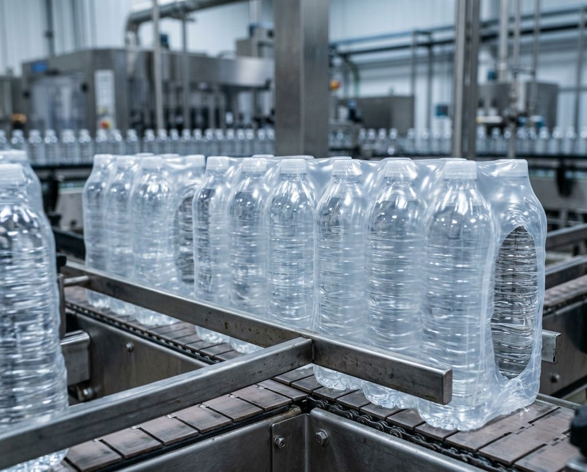
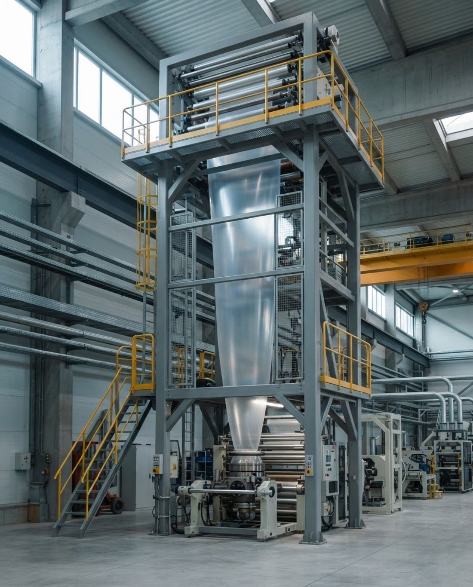
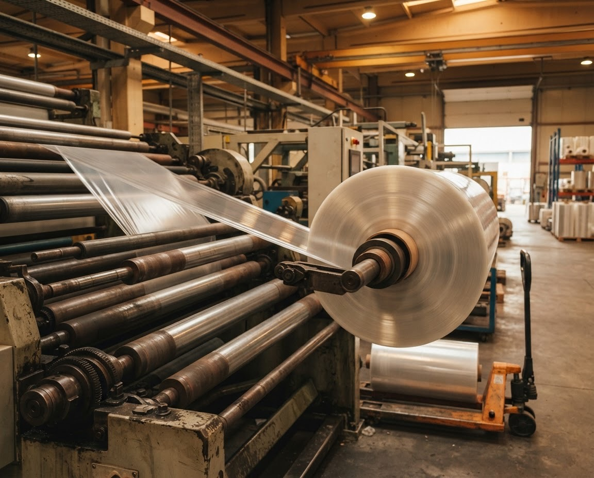
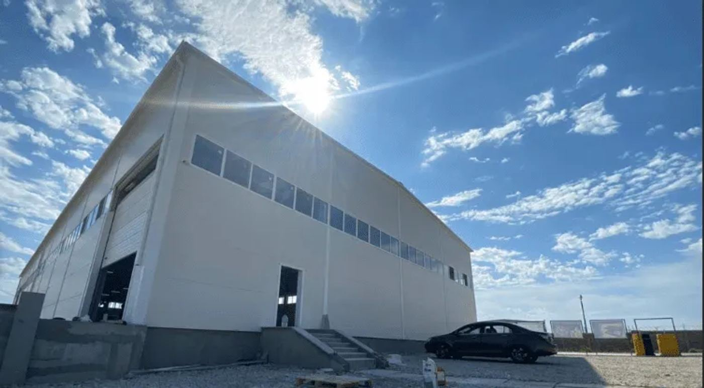

Термоусадочная плёнка
Плёнка для групповой упаковки товаров. В термотоннеле плотно садится по форме упаковки и защищает продукцию от пыли, влаги и вскрытия.
- Толщина
- 20–200 мкм
- Ширина рукава
- до 1500 мм
- Температура усадки
- 140–180 °C
- Усадка
- до 70%

Где применяют
- Групповая упаковка бутылок и банок
- Упаковка коробок и блоков
- Пищевая продукция
- Стройматериалы и тяжёлые грузы
Виды
- Рукав шириной до 1500 мм
- Толщина от 20 до 200 мкм под вес упаковки
Как выбрать
Подскажем по телефону +7 (988) 309-02-02 или в ответ на заявку.
Какую толщину выбрать
Тонкая плёнка, от 20 мкм, подходит для лёгких групповых упаковок: небольшие бутылки, банки, штучные товары.
Плёнка средней толщины держит упаковки потяжелее: шесть бутылок по 1,5 л, коробки, блоки.
Толстая плёнка, до 200 мкм, нужна для тяжёлых и крупных грузов, например стройматериалов, где упаковка должна выдержать погрузку и дорогу.
Ширина рукава
Ширину подбирают по размеру упаковки с запасом на перехлёст и усадку. Мы выпускаем рукав шириной до 1500 мм. Пришлите габариты упаковки, и мы подскажем ширину.
Режим усадки
Плёнка садится при температуре 140–180 °C и уменьшается до 70%. Точный режим зависит от вашего термотоннеля или термоножа и от толщины плёнки: напишите модель оборудования, и мы подберём подходящую плёнку.
Делаем сами в Каспийске
Термоусадочная плёнка выпускается на нашем заводе: от приёмки сырья и экструзии до намотки и отгрузки. Ничего не отдаём на сторону.



Частые вопросы
Какой толщины бывает термоусадочная плёнка?
Мы производим плёнку толщиной от 20 до 200 мкм.
Какая максимальная ширина рукава?
До 1500 мм.
При какой температуре садится плёнка?
При 140–180 °C, усадка до 70%.
Подходит ли плёнка для пищевой продукции?
Да, её используют для групповой упаковки бутылок, банок и пищевых продуктов.
Как узнать цену?
Оставьте заявку с толщиной, шириной и объёмом или позвоните по номеру +7 (988) 309-02-02. В рабочее время ответим с ценой в течение часа.
Посчитаем стоимость за час
Напишите толщину, ширину и объём. Ответим с ценой и сроком доставки.
Рассчитать термоусадку